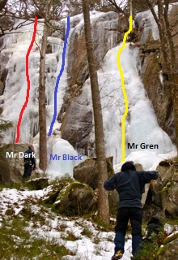

Området är ganska litet och lederna är mellan 15-10 m långa. Lederna är vända mot väst. Plus för att det är lugnt och tyst. Passar utmärkt för nybörjare och provapå. Då det är enkelt att sätta topprep. Namnen på lederna är påhittade, FA-person får gärna ändra. Anmarsch: lederna är lätta att hitta om man följer skidspåret och tittar åt höger.

Isuppdatering 4 februari 2012:

Tag av E20 på avfart 80 i Partille. Kör mot Lexby/Utby. Sväng höger i rondellen mot Lexby. Tag till vänster efter ca 150 m in på Paradisvägen. Tag vänster igen in på Gavelåsvägen. Kör tills vägen tar slut och parkera på parkeringen vid en tegelvilla. Följ stigen in i skogen ca 1 km. Tag till höger när stigen delar sig vid en skyllt med en skidlöpare på. Gå ca 300 m från stigkorsningen och du har fallen på höger sida. Fallen ligger ca 300 m söder om klippklättringsklipporna.
Inga kända accessproblem.
Kategori:Is
--
Mr Dark
27 februari 2011 kl. 23.43 (CET)
Copyright (C) Permission is granted to copy, distribute and/or modify this document under the terms of the GNU Free Documentation License, Version 1.3